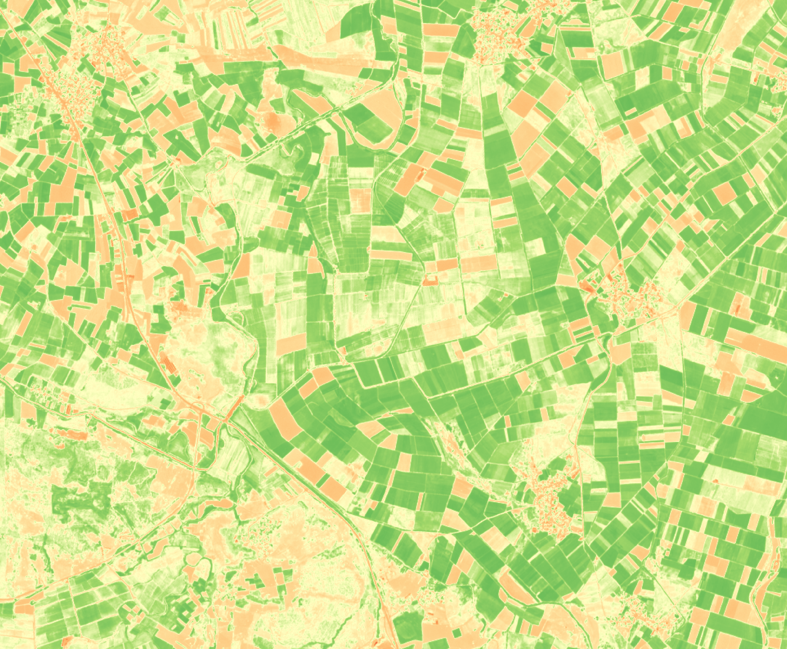

Featured Projects


Agriculture in the Vicinity of Rural Settlements
A Buffer-Based Remote Sensing Analysis Using Useful Spectral Indicies for Monitoring Agricultural Health.
CBD Delineation in South Tangerang
Central Business District delineation analysis using spatial weighting approach to identify the characteristics and boundaries of the CBD area.
About This Portfolio
Cities are always fascinating—whether discussed casually or examined in depth. To speak about the city is to delve into the deepest layers of human anthropology, intertwined with a multitude of complex forces that make it endlessly compelling to study. The city is an entity that is never complete. This modest portfolio exists to express my seriousness and affection for urban studies.
Learn More About Me